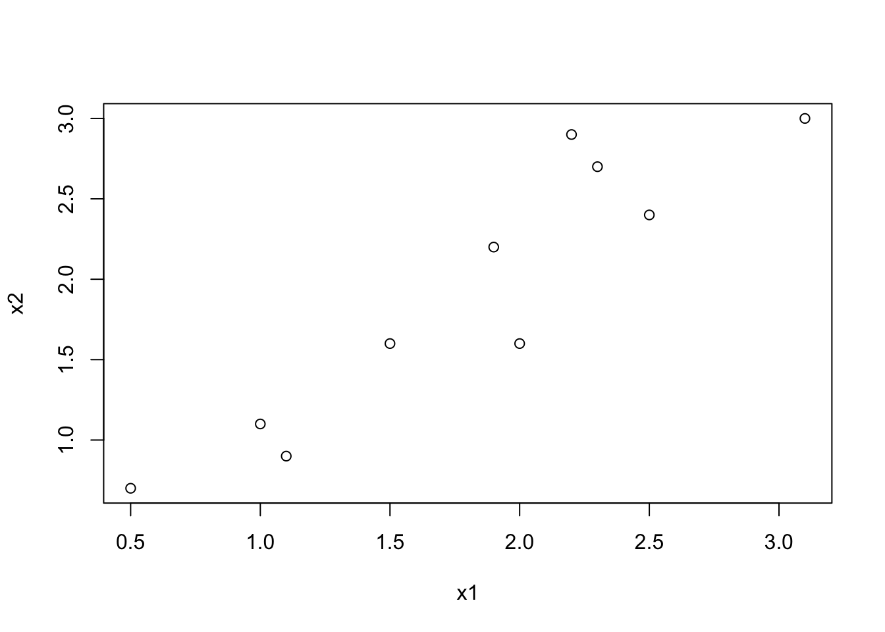

First we will try to perform Principal Components analysis (PCA) without using a premade function.
Make the dataset and plot it
d <- c(2.5, 2.4, 0.5, 0.7, 2.2, 2.9, 1.9, 2.2, 3.1, 3.0, 2.3,
2.7, 2, 1.6, 1, 1.1, 1.5, 1.6, 1.1, 0.9)
data <- matrix(d, ncol=2, byrow = T)
plot(data, xlab="x1", ylab="x2")
We subtract the mean of each attribute (x1, x2) from the respective values (centering the data) using the function scale.
data_norm <- scale(data, scale=F)
plot(data_norm, xlab="x1", ylab="x2")S <- cov(data_norm)
print(S)## [,1] [,2]
## [1,] 0.6165555556 0.6154444444
## [2,] 0.6154444444 0.7165555556udv <- svd(S)
print(udv)## $d
## [1] 1.28402771217 0.04908339894
##
## $u
## [,1] [,2]
## [1,] -0.6778733985 -0.7351786555
## [2,] -0.7351786555 0.6778733985
##
## $v
## [,1] [,2]
## [1,] -0.6778733985 -0.7351786555
## [2,] -0.7351786555 0.6778733985# asp=1 keep the aspect ratio to 1 so that the eigenvectors are perpendicular
plot(data_norm, asp=1, xlab="x1", ylab="x2")
arrows(0,0,udv$u[1,1],udv$u[2,1], lwd=1)
arrows(0,0,udv$u[1,2],udv$u[2,2], lwd=0.5)barplot(udv$d)print(cumsum(udv$d)/sum(udv$d))## [1] 0.9631813143 1.0000000000We can see that the 1st component accounts for more than 95% of the variance.
We transform the 2D dataset into a 1D dataset using just the 1st PC.
data_new <- t(udv$u[,1,drop=FALSE]) %*% t(data_norm)
data_new## [,1] [,2] [,3] [,4] [,5]
## [1,] -0.8279701862 1.777580325 -0.9921974944 -0.274210416 -1.675801419
## [,6] [,7] [,8] [,9] [,10]
## [1,] -0.9129491032 0.0991094375 1.144572164 0.4380461368 1.223820555plot(data_new,data_new,asp=1,xlab="x1", ylab="x2")Next we will the prcomp function that performs PCA in one step. We will apply it on the Iris dataset.
# download the file
data = iris
set.seed(1234)
ind <- sample(2, nrow(data), replace=TRUE, prob=c(0.7, 0.3))
trainData <- data[ind==1,]
validationData <- data[ind==2,]
library(class)
library(stats)
trainData <- trainData[complete.cases(trainData),]
validationData <- validationData[complete.cases(validationData),]
trainDataX <- trainData[,-ncol(trainData)]
logTrainDataX <- log(trainDataX)
train.pca <- prcomp(logTrainDataX, center = TRUE, scale. = TRUE)
summary(train.pca)## Importance of components:
## PC1 PC2 PC3 PC4
## Standard deviation 1.722641 0.9312903 0.3648375 0.1791644
## Proportion of Variance 0.741870 0.2168300 0.0332800 0.0080200
## Cumulative Proportion 0.741870 0.9587000 0.9919800 1.0000000From the summary, you can see that with 2 PCs, I can explain more than 95% of the variance.
trainDataY <- trainData$Species
validationDataX <- validationData[,-ncol(trainData)]
# Let's also transform the validation data
logValidationDataX <- log(validationDataX)
validation.pca <- predict(train.pca, newdata=logValidationDataX)
validationDataY <- validationData$Species
# no pca prediction
prediction = knn(trainDataX, validationDataX, trainDataY, k = 3)
# So let's predict using only the 7 principal components
prediction_pca = knn(train.pca$x[,1:2], validation.pca[,1:2], trainDataY, k = 3)
cat("Confusion matrix:\n")## Confusion matrix:xtab = table(prediction, validationData$Species)
print(xtab)##
## prediction setosa versicolor virginica
## setosa 10 0 0
## versicolor 0 12 1
## virginica 0 0 15cat("\nEvaluation:\n\n")##
## Evaluation:accuracy = sum(prediction == validationData$Species)/length(validationData$Species)
cat(paste("Accuracy:\t", format(accuracy, digits=2), "\n",sep=" "))## Accuracy: 0.97cat("Confusion matrix PCA:\n")## Confusion matrix PCA:xtab = table(prediction_pca, validationData$Species)
print(xtab)##
## prediction_pca setosa versicolor virginica
## setosa 10 0 0
## versicolor 0 10 3
## virginica 0 2 13cat("\nEvaluation PCA:\n\n")##
## Evaluation PCA:accuracy = sum(prediction_pca == validationData$Species)/length(validationData$Species)
cat(paste("Accuracy PCA:\t", format(accuracy, digits=2), "\n",sep=" "))## Accuracy PCA: 0.87Using the PCA we can also plot in 2D high-dimensional data using just the first two components.
plot(train.pca$x[trainData$Species == 'setosa',1:2], col="blue", ylim = c(-3, 3), xlim=c(-3,3), asp=1)
points(train.pca$x[trainData$Species == 'versicolor',1:2], pch = 3, col="red")
points(train.pca$x[trainData$Species == 'virginica',1:2], pch = 4, col="green")In this case the PCA is not the best method for dimensionality reduction to improve the accuracy. From the plot one cas observe that the versicolor and virginica species are intermixed in 2D and thus the k-NN algorithm will have trouble classifying between the two.